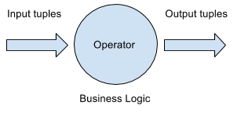
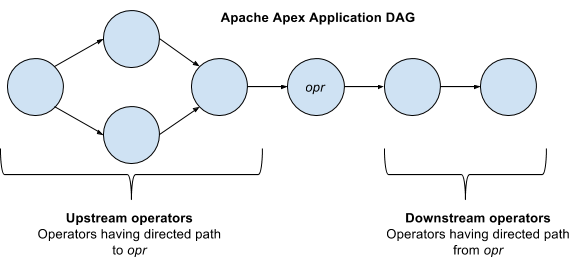
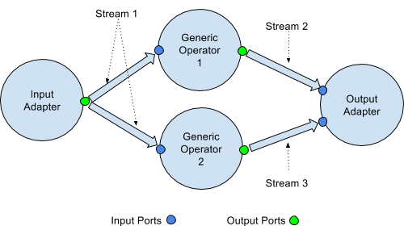
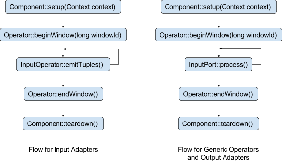
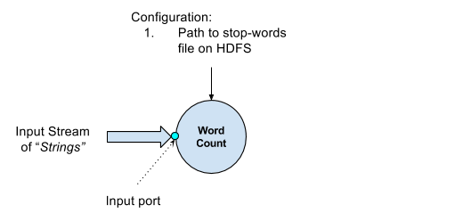
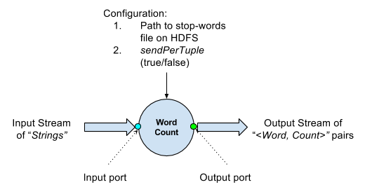

Operator Development Guide
Operators are basic building blocks of an application built to run on Apache Apex platform. An application may consist of one or more operators each of which define some logical operation to be done on the tuples arriving at the operator. These operators are connected together using streams forming a Directed Acyclic Graph (DAG). In other words, a streaming application is represented by a DAG that consists of operations (called operators) and data flow (called streams).
In this document we will discuss details on how an operator works and its internals. This document is intended to serve the following purposes
- Apache Apex Operators - Introduction to operator terminology and concepts.
- Writing Custom Operators - Designing, coding and testing new operators from scratch. Includes code examples.
- Operator Reference - Details of operator internals, lifecycle, and best practices and optimizations.
- Advanced Features - Advanced features in operator development and its capabilities.
Apache Apex Operators
Operators - “What” in a nutshell
Operators are independent units of logical operations which can contribute in executing the business logic of a use case. For example, in an ETL workflow, a filtering operation can be represented by a single operator. This filtering operator will be responsible for doing just one task in the ETL pipeline, i.e. filter incoming tuples. Operators do not impose any restrictions on what can or cannot be done as part of a operator. An operator may as well contain the entire business logic. However, it is recommended, that the operators are light weight independent tasks, in order to take advantage of the distributed framework that Apache Apex provides. The structure of a streaming application shares resemblance with the way CPU pipelining works. CPU pipelining breaks down the computation engine into different stages viz. instruction fetch, instruction decode, etc. so that each of them can perform their task on different instructions parallely. Similarly, Apache Apex APIs allow the user to break down their tasks into different stages so that all of the tasks can be executed on different tuples parallely.

Operators - “How” in a nutshell
An Apache Apex application runs as a YARN application. Hence, each of the operators that the application DAG contains, runs in one of the containers provisioned by YARN. Further, Apache Apex exposes APIs to allow the user to request bundling multiple operators in a single node, a single container or even a single thread. We shall look at these calls in the reference sections [cite reference sections]. For now, consider an operator as some piece of code that runs on some machine of a YARN cluster.
Types of Operators
An operator works on one tuple at a time. These tuples may be supplied by other operators in the application or by external sources, such as a database or a message bus. Similarly, after the tuples are processed, these may be passed on to other operators, or stored into an external system. There are 3 type of operators based on function:
- Input Adapter - This is one of the starting points in the application DAG and is responsible for getting tuples from an external system. At the same time, such data may also be generated by the operator itself, without interacting with the outside world. These input tuples will form the initial universe of data that the application works on.
- Generic Operator - This type of operator accepts input tuples from the previous operators and passes them on to the following operators in the DAG.
- Output Adapter - This is one of the ending points in the application DAG and is responsible for writing the data out to some external system.
Note: There can be multiple operators of all types in an application DAG.
Operators Position in a DAG
We may refer to operators depending on their position with respect to one another. For any operator opr (see image below), there are two types of operators.
- Upstream operators - These are the operators from which there is a directed path to opr in the application DAG.
- Downstream operators - These are the operators to which there is a directed path from opr in the application DAG.
Note that there are no cycles formed in the application DAG.

Ports
Operators in a DAG are connected together via directed flows called streams. Each stream has end-points located on the operators called ports. Therea are 2 types of ports.
- Input Port - This is a port through which an operator accepts input tuples from an upstream operator.
- Output port - This is a port through which an operator passes on the processed data to downstream operators.
Looking at the number of input ports, an Input Adapter is an operator with no input ports, a Generic operator has both input and output ports, while an Output Adapter has no output ports. At the same time, note that an operator may act as an Input Adapter while at the same time have an input port. In such cases, the operator is getting data from two different sources, viz. the input stream from the input port and an external source.

How Operator Works
An operator passes through various stages during its lifetime. Each stage is an API call that the Streaming Application Master makes for an operator. The following figure illustrates the stages through which an operator passes.

- The setup() call initializes the operator and prepares itself to start processing tuples.
- The beginWindow() call marks the beginning of an application window and allows for any processing to be done before a window starts.
- The process() call belongs to the InputPort and gets triggered when any tuple arrives at the Input port of the operator. This call is specific only to Generic and Output adapters, since Input Adapters do not have an input port. This is made for all the tuples at the input port until the end window marker tuple is received on the input port.
- The emitTuples() is the counterpart of process() call for Input Adapters. This call is used by Input adapters to emit any tuples that are fetched from the external systems, or generated by the operator. This method is called continuously until the pre-configured window time is elapsed, at which the end window marker tuple is sent out on the output port.
- The endWindow() call marks the end of the window and allows for any processing to be done after the window ends.
- The teardown() call is used for gracefully shutting down the operator and releasing any resources held by the operator.
Developing Custom Operators
About this tutorial
This tutorial will guide the user towards developing a operator from scratch. It includes all aspects of writing an operator including design, code and unit testing.
Introduction
In this tutorial, we will design and write, from scratch, an operator called Word Count. This operator will accept tuples of type String, count the number of occurrences for each word appearing in the tuple and send out the updated counts for all the words encountered in the tuple. Further, the operator will also accept a file path on HDFS which will contain the stop-words which need to be ignored when counting occurrences.
Design
Design of the operator must be finalized before starting to write an operator. Many aspects including the functionality, the data sources, the types involved etc. need to be first finalized before writing the operator. Let us dive into each of these while considering the Word Count operator.
Functionality
We can define the scope of operator functionality using the following tasks:
- Parse the input tuple to identify the words in the tuple
- Identify the stop-words in the tuple by looking up the stop-word file as configured
- For each non-stop-word in the tuple, count the occurrences in that tuple and add it to a global counts
Let’s consider an example. Suppose we have the following tuples flow into the Word Count operator.
- Humpty dumpty sat on a wall
- Humpty dumpty had a great fall
Initially counts for all words is 0. Once the first tuple is processed, the counts that must be emitted are:
humpty - 1
dumpty - 1
sat - 1
wall - 1
Note that we are ignoring the stop-words, “on” and “a” in this case. Also note that as a rule, we’ll ignore the case of the words when counting occurrences.
Similarly, after the second tuple is processed, the counts that must be emitted are:
humpty - 2
dumpty - 2
great - 1
fall - 1
Again, we ignore the words “had” and “a” since these are stop-words.
Note that the most recent count for any word is correct count for that word. In other words, any new output for a word, invalidated all the previous counts for that word.
Inputs
As seen from the example above, the following inputs are expected for the operator:
- Input stream whose tuple type is String
- Input HDFS file path, pointing to a file containing stop-words
Only one input port is needed. The stop-word file will be small enough to be read completely in a single read. In addition this will be a one time activity for the lifetime of the operator. This does not need a separate input port.

Outputs
We can define the output for this operator in multiple ways.
- The operator may send out the set of counts for which the counts have changed after processing each tuple.
- Some applications might not need an update after every tuple, but only after a certain time duration.
Let us try and implement both these options depending on the configuration. Let us define a boolean configuration parameter “sendPerTuple”. The value of this parameter will indicate whether the updated counts for words need to be emitted after processing each tuple (true) or after a certain time duration (false).
The type of information the operator will be sending out on the output port is the same for all the cases. This will be a < key, value > pair, where the key is the word while, the value is the latest count for that word. This means we just need one output port on which this information will go out.

Configuration
We have the following configuration parameters:
- stopWordFilePath - This parameter will store the path to the stop word file on HDFS as configured by the user.
- sendPerTuple - This parameter decides whether we send out the updated counts after processing each tuple or at the end of a window. When set to true, the operator will send out the updated counts after each tuple, else it will send at the end of each window.
Code
The source code for the tutorial can be found here:
https://github.com/DataTorrent/examples/tree/master/tutorials/operatorTutorial
Operator Reference
The Operator Class
The operator will exist physically as a class which implements the Operator interface. This interface will require implementations for the following method calls:
- setup(OperatorContext context)
- beginWindow(long windowId)
- endWindow()
- tearDown()
In order to simplify the creation of an operator, Apache Apex library also provides a base class “BaseOperator” which has empty implementations for these methods. Please refer to the Apex Operators section and the Reference section for details on these.
We extend the class “BaseOperator” to create our own operator “WordCountOperator”.
public class WordCountOperator extends BaseOperator
{
}
Class (Operator) properties
We define the following class variables:
- sendPerTuple - Configures the output frequency from the operator
private boolean sendPerTuple = true; // default
- stopWordFilePath - Stores the path to the stop words file on HDFS
private String stopWordFilePath; // no default
- stopWords - Stores the stop words read from the configured file
private transient String[] stopWords;
- globalCounts - A Map which stores the counts of all the words encountered so far. Note that this variable is non transient, which means that this variable is saved as part of the checkpoint and can be recovered in event of a crash.
private Map<String, Long> globalCounts;
- updatedCounts - A Map which stores the counts for only the most recent tuple(s). sendPerTuple configuration determines whether to store the most recent or the recent window worth of tuples.
private transient Map<String, Long> updatedCounts;
- input - The input port for the operator. The type of this input port is String which means it will only accept tuples of type String. The definition of an input port requires implementation of a method called process(String tuple), which should have the processing logic for the input tuple which arrives at this input port. We delegate this task to another method called processTuple(String tuple). This helps in keeping the operator classes extensible by overriding the processing logic for the input tuples.
public transient DefaultInputPort<String> input = new
DefaultInputPort<String>()
{
@Override
public void process(String tuple)
{
processTuple(tuple);
}
};
- output - The output port for the operator. The type of this port is Entry < String, Long >, which means the operator will emit < word, count > pairs for the updated counts.
public transient DefaultOutputPort <Entry<String, Long>> output = new
DefaultOutputPort<Entry<String,Long>>();
The Constructor
The constructor is the place where we initialize the non-transient data structures, since constructor is called just once per activation of an operator. With regards to Word Count operator, we initialize the globalCounts variable in the constructor.
globalCounts = Maps.newHashMap();
Setup call
The setup method is called only once during an operator lifetime and its purpose is to allow the operator to set itself up for processing incoming streams. Transient objects in the operator are not serialized and checkpointed. Hence, it is essential that such objects initialized in the setup call. In case of operator failure, the operator will be redeployed (most likely on a different container). The setup method called by the Apache Apex engine allows the operator to prepare for execution in the new container.
The following tasks are executed as part of the setup call:
- Read the stop-word list from HDFS and store it in the stopWords array
- Initialize updatedCounts variable. This will store the updated counts for words in most recent tuples processed by the operator. As a transient variable, the value will be lost when operator fails.
Begin Window call
The begin window call signals the start of an application window. With regards to Word Count Operator, we are expecting updated counts for the most recent window of data if the sendPerTuple is set to false. Hence, we clear the updatedCounts variable in the begin window call and start accumulating the counts till the end window call.
Process Tuple call
The processTuple method is called by the process method of the input port, input. This method defines the processing logic for the current tuple that is received at the input port. As part of this method, we identify the words in the current tuple and update the globalCounts and the updatedCounts variables. In addition, if the sendPerTuple variable is set to true, we also emit the words and corresponding counts in updatedCounts to the output port. Note that in this case (sendPerTuple = true), we clear the updatedCounts variable in every call to processTuple.
End Window call
This call signals the end of an application window. With regards to Word Count Operator, we emit the updatedCounts to the output port if the sendPerTuple flag is set to false.
Teardown call
This method allows the operator to gracefully shut down itself after releasing the resources that it has acquired. With regards to our operator, we call the shutDown method which shuts down the operator along with any downstream operators.
Testing your Operator
As part of testing our operator, we test the following two facets:
- Test output of the operator after processing a single tuple
- Test output of the operator after processing of a window of tuples
The unit tests for the WordCount operator are available in the class WordCountOperatorTest.java. We simulate the behavior of the engine by using the test utilities provided by Apache Apex libraries. We simulate the setup, beginWindow, process method of the input port and endWindow calls and compare the output received at the simulated output ports.
- Invoke constructor; non-transients initialized.
- Copy state from checkpoint -- initialized values from step 1 are replaced.
Advanced Features
Control Tuple Support
Operators now also have the capability to emit control tuples. These control tuples are different from the control tuples used by the engine like BEGIN_WINDOW and END_WINDOW tuples. Operators can create and emit their own control tuples which can be used to communicate to the down stream operators regarding some event. Examples of such events can be BEGIN_FILE, or END_FILE. More details can be found at Control Tuples
Malhar Operator Library
To see the full list of Apex Malhar operators along with related documentation, visit Apex Malhar on Github